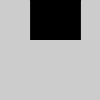
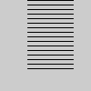
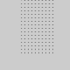

此参考适用于Processing 3.0+。如果您有以前的版本，请使用“帮助”菜单中随软件提供的参考。如果您发现任何错误或有任何建议，请告诉我们。如果您更喜欢更多技术参考，请访问Processing Core Javadoc和Libraries Javadoc。
| 名称 | for |
||||||||||||||
|---|---|---|---|---|---|---|---|---|---|---|---|---|---|---|---|
| 示例 | 
for (int i = 0; i < 40; i = i+1) {
line(30, i, 80, i);
}

for (int i = 0; i < 80; i = i+5) {
line(30, i, 80, i);
}
for (int i = 40; i < 80; i = i+5) {
line(30, i, 80, i);
}

// Nested for() loops can be used to
// generate two-dimensional patterns
for (int i = 30; i < 80; i = i+5) {
for (int j = 0; j < 80; j = j+5) {
point(i, j);
}
}
// This example has no visual output,
// but prints values to the console.
int[] nums = { 5, 4, 3, 2, 1 };
for (int i : nums) {
println(i);
}
| ||||||||||||||
| 描述 |
Controls a sequence of repetitions. A basic for structure has three parts: init, test, and update. Each part must be separated by a semicolon (;). The loop continues until the test evaluates to false. When a for structure is executed, the following sequence of events occurs: 1. The init statement is run. 2. The test is evaluated to be true or false. 3. If the test is true, jump to step 4. If the test is false, jump to step 6. 4. Run the statements within the block. 5. Run the update statement and jump to step 2. 6. Exit the loop. In the first example above, the for structure is executed 40 times. In the init statement, the value i is created and set to zero. i is less than 40, so the test evaluates as true. At the end of each loop, i is incremented by one. On the 41st execution, the test is evaluated as false, because i is then equal to 40, so i < 40 is no longer true. Thus, the loop exits. A second type of for structure makes it easier to iterate over each element of an array. The last example above shows how it works. Within the parentheses, first define the datatype of the array, then define a variable name. This variable name will be assigned to each element of the array in turn as the for moves through the entire array. Finally, after the colon, define the array name to be used. |
||||||||||||||
| 语法 |
for (init; test; update) {
statements
}
for (datatype element : array) {
statements
}
| ||||||||||||||
| 参数 |
| ||||||||||||||
| 关联 | while |